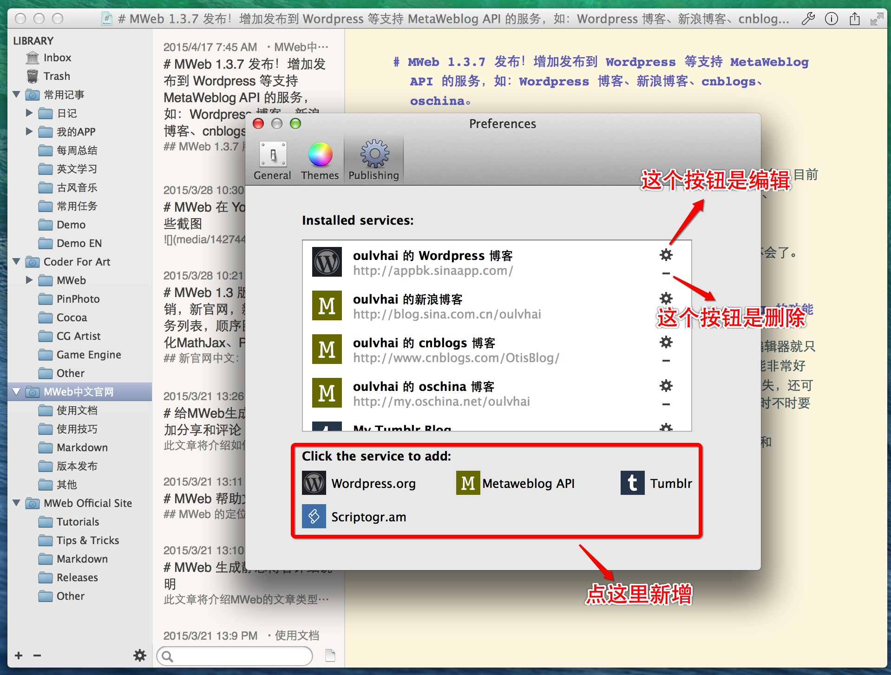
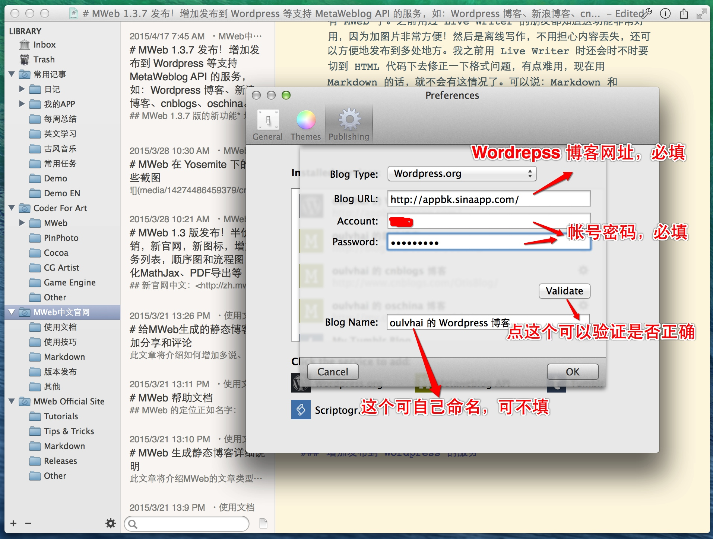
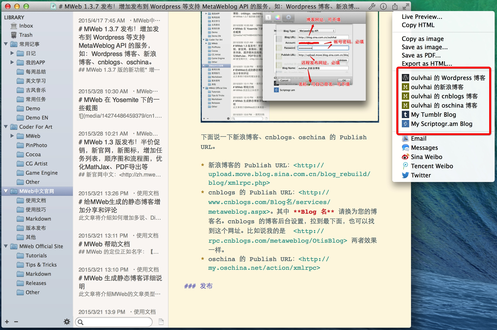
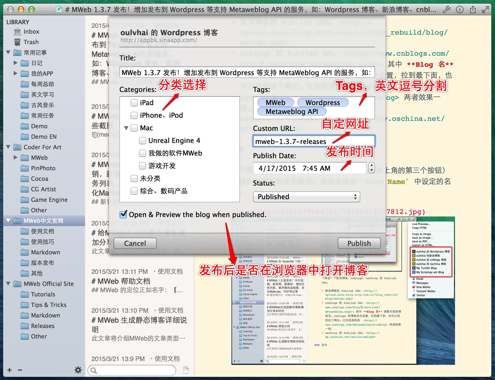

MWeb 1.3.7 版的新功能
- 增加发布到 Wordpress 等支持 Metaweblog API 的服务，目前经测试过的有： Wordpress 博客、新浪博客、cnblogs、oschina。
- 增加发布到 Tumblr 和 Scriptogr.am
- 即时预览改进，原来会闪动，现在拿掉了同步滚动功能后不会了。
- 编辑器和三栏切换也有小改进。
下边介绍一下发布到 Wordpress 等支持 Metaweblog API 的博客服务的功能
我所知，Mac 下支持这一功能的 Native 的 Markdown 编辑器就只有 MWeb 了。之前用过 Live Writer 的朋友都知道这功能非常好用，因为加图片非常方便！然后是离线写作，不用担心内容丢失，还可以方便地发布到多处地方。我之前用 Live Writer 时还会时不时要切到 HTML 代码下去修正一下格式问题，有点难用，现在用 Markdown 的话，就不会有这情况了。可以说：Markdown 和 Metaweblog API 才是真正的完美结合！
在 MWeb 中点菜单：MWeb - Preferences - Publishing 即可进入发布设置界面，如下：

增加发布到 Wordpress 的服务
点 Wordpress.org 这个按钮，如下图，由于 Wordpress 的远程发布网址可以由博客网址得知，所以只需要填入博客网址、帐号、密码即可。密码是存到 Keychain，所以可无需担心。

注意： 如果遇到 validate 不通过并提示 404 错误的话，目前有两个可能（感谢 @iamliunian）：
- 可以查看 Wordpress 的设置里是否开启远程发布。位置是
设置-撰写-远程发布并开启XML-RPC - 检查 你的博客网址 + xmlrpc.php，看看是否正常，比如说我的 Wordpress 博客的是 http://appbk.sinaapp.com/xmlrpc.php，打开会显示
XML-RPC server accepts POST requests only.是为正常，否则就有可能是 url rewrite 的设置，让 xmlrpc.php 不能用了。这要修改 .htaccess 让 xmlrpc.php 正常。
增加发布到 新浪博客、cnblogs、oschina 的博客服务的服务
点 Metaweblog API 这个按钮，如下图，必填的只有 帐号、密码、Publish URL。Publish URL 这个一般支持 Metaweblog API 的服务都会提供的。

下面说一下新浪博客、cnblogs、oschina 的 Publish URL。
- 新浪博客的 Publish URL：http://upload.move.blog.sina.com.cn/blog_rebuild/blog/xmlrpc.php
- cnblogs 的 Publish URL：http://www.cnblogs.com/Blog名/services/metaweblog.aspx。其中 Blog 名 请换为您的博客名。cnblogs 的博客后台设置，拉到最下面，也可以找到这个网址。比如说我的是 http://rpc.cnblogs.com/metaweblog/OtisBlog 两者网址不同，但是效果一样。
- oschina 的 Publish URL：https://my.oschina.net/action/xmlrpc
发布
如下图红框处，你可以在 MWeb 分享按钮（右上角的第三个按钮）中找到所增加的发布服务。名称会显示 Blog Name 中设定的名称。

比如说我要发布到我的 Wordpress 博客，点 oulvhai 的 Wordpress 博客，如下图：

要注意的时，有些博客服务是不支持上边的一些设置的，比如说 Custom URL、Publish Date、Status 等。设定好后，点 Publish 按钮就可以发布了。
要说明的是：Metaweblog API 有自动上传图片的功能，有看到我现在这文章的图片都是在本地的，发布时就会自动把图片上传到所发布的博客服务。所以就不用找图床了。我这文章会发布到以下几个地方：
- 我的用 MWeb 静态网站功能生成的个人博客：http://coderforart.com
- 同样用 MWeb 静态网站功能生成的 MWeb 中文官网：http://zh.mweb.im
- 我的 Wordpress 测试博客：http://appbk.sinaapp.com/
- 我的新浪博客：http://blog.sina.com.cn/oulvhai
- 我在 cnblogs 的博客：http://www.cnblogs.com/OtisBlog
- 我在 oschina 的博客：http://my.oschina.net/oulvhai
关于 MWeb Lite
MWeb Lite 的定位是 Markdown 编辑器和一些 MWeb 正式版的功能的体验。对于轻度使用 Markdown 的朋友来说， MWeb Lite 已足够了，MWeb 正式版的功能大部分用不到。MWeb Lite 的 Markdown 编辑器功能是跟 MWeb 正式版一样的。这个功能会随着 MWeb 这个产品的不断打磨而得到更好的体验。目前 MWeb Lite 对于正式版不同的地方有：
- 文档库 MWeb Lite 限定为 10 个文档
- 发布服务只能增加 1 个。
其他
这里说一下用 MWeb 生成的静态博客的好处：可直接打开所生成的 HTML 文档就能预览！这个是不同于 otcpress 等静态博客生成方式的。otcpress 等生成的 HTML 直接打开预览是没办法看到效果的，必须上传或者用 otcpress 来预览。MWeb 的静态博客功能没有 otcpress 这么强大，但是对于简单只想写一下博客的朋友来说，我觉得足够了。当然，下一版也会增强静态博客功能的。
另外发布到 Wordpress.com、bloger、evernote 功能也是会有的，这几个要在 1.4 版发布后才会开始弄。